C4 Coffee, a prominent local brand in Christchurch, required a modernized digital ordering system to improve customer experience and streamline their busy daily operations.
Leading the UI/UX design process, I was responsible for developing a comprehensive mobile ordering system prototype tailored to their specific business needs.
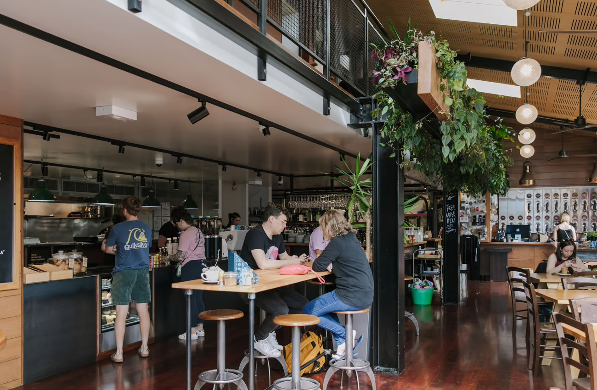
I mapped the customer journey through user research to identify friction points and then created low and high-fidelity wireframes and interactive mockups using Figma.
By iterating rapidly based on usability testing and stakeholder feedback, I delivered a polished, intuitive UI/UX prototype that optimized the ordering workflow and significantly improved the anticipated user experience.
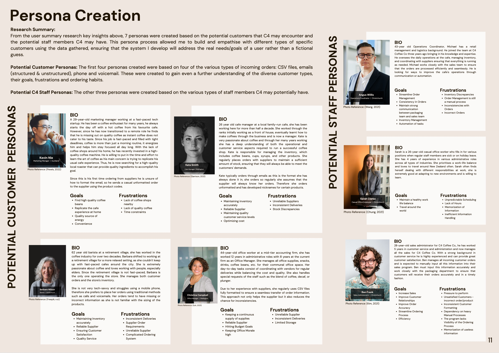
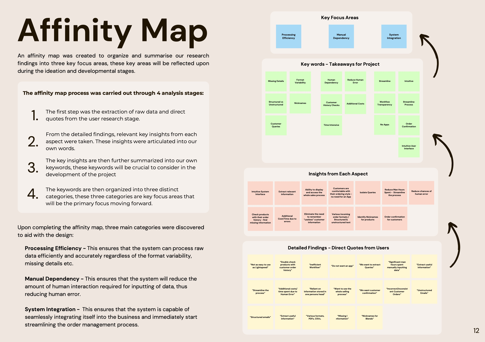
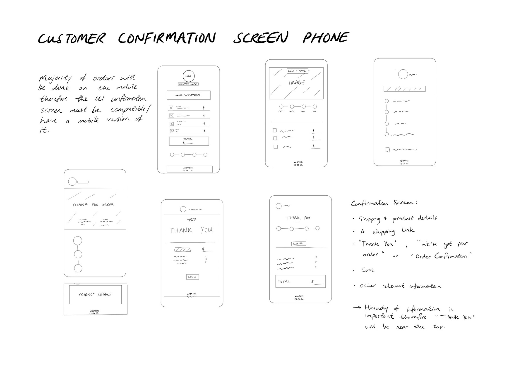
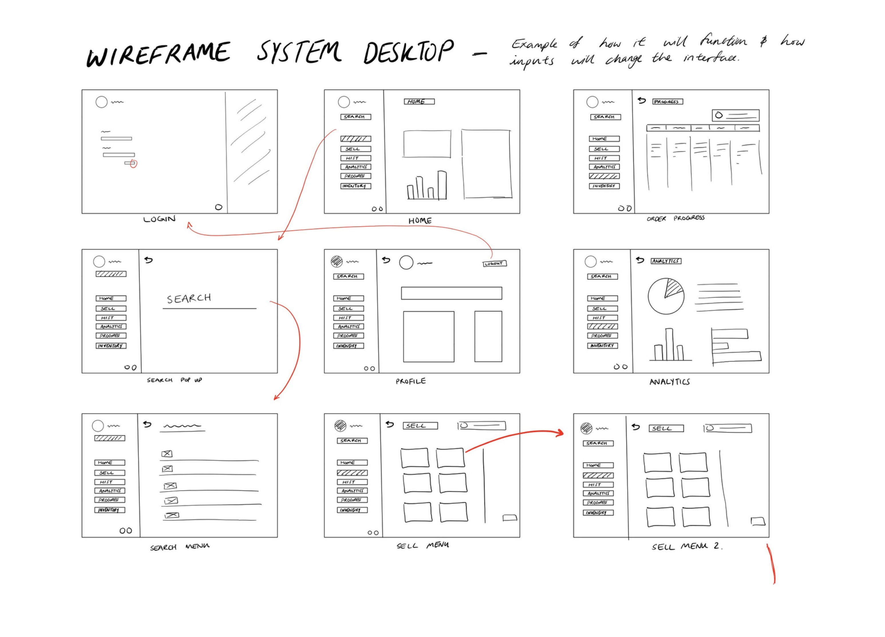
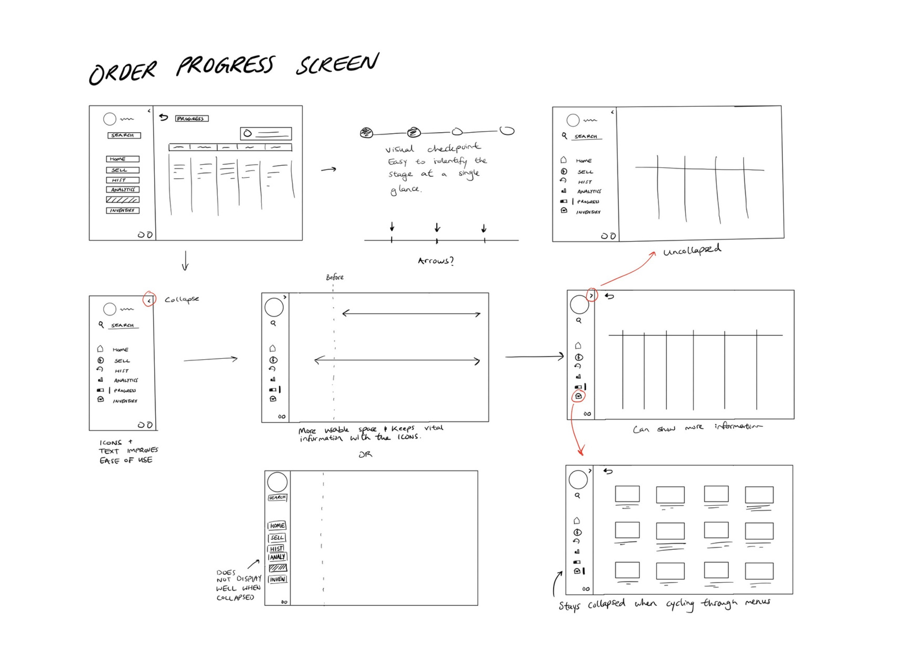
This project demonstrated how user-centered design can directly drive operational efficiency, and I look forward to integrating predictive UI elements in future retail systems to further reduce user cognitive load.
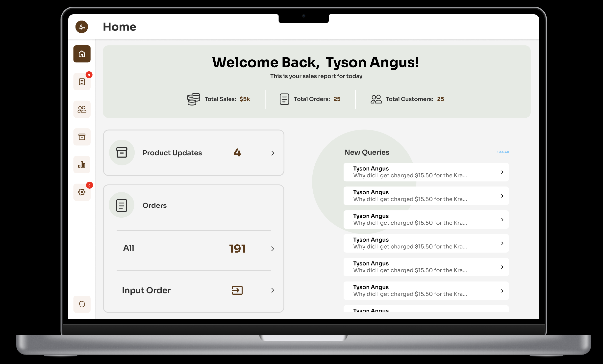
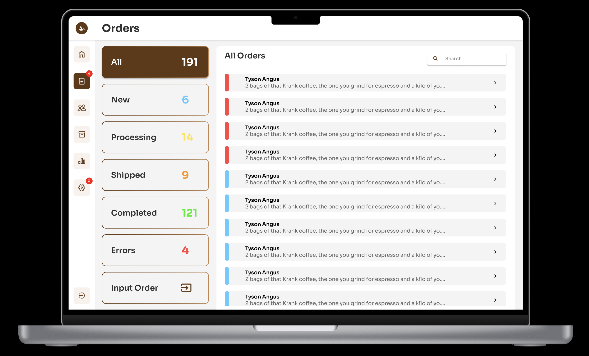
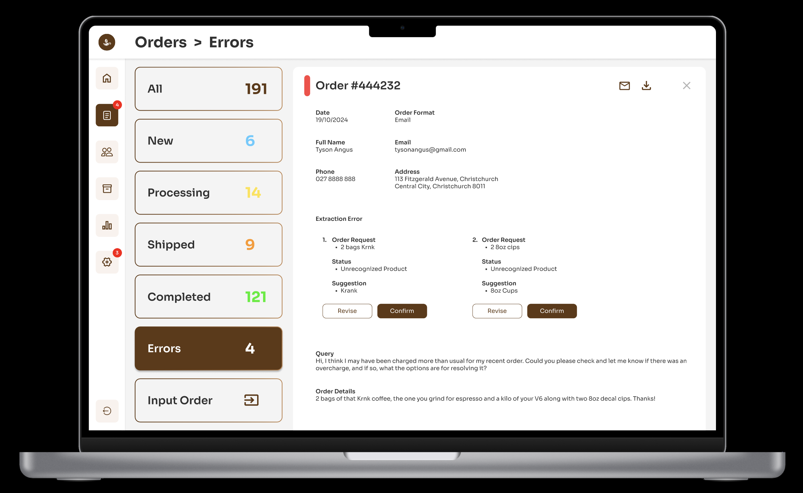
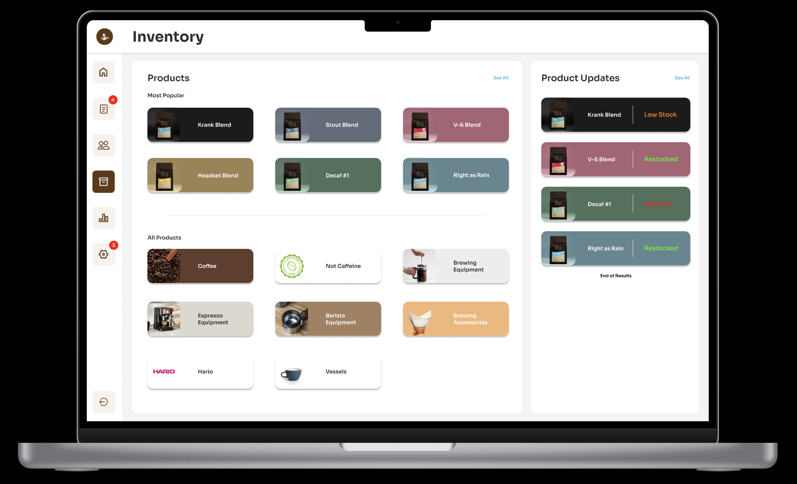
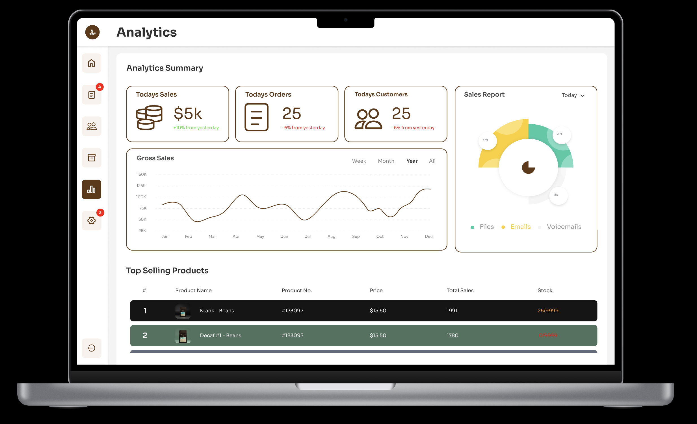